RECO: recycle correctly
A wearble app for effecient recycling Duration:Sept 2016-Nov 2016 Type:Group Project: Team 4 Contribution:Interaction design,User Experience,Requirement Specification,Business process,Swiss E-government
Overview
Reco is a just-in-time intervention system using a wearable , designed to help Georgia Tech students improve their waste sorting behavior and increase knowledge of proper waste sorting techniques . The motivation behind aware-able is to gently nudge the user in the moment of performing the action and direct them into answering the waste sorting questions to help them make an informed and right choiceReco is a also significant step towards having a long-term impact to change students’ behaviors for recycling and creating a more sustainable campus.
Why Reco?
Waste sorting is one of the significant issue at Georgia Tech Campus with recent waste auditing study done in Spring 2016 by Office of Facility management showed the lot of trash being thrown in recycle bins . This clearly undermines the recycling initiative at campus with lower amount of recycling material being produced due to contamination with trash This could have a huge impact for tech's a long term goal of being a sustainable campus. .
Project Journey
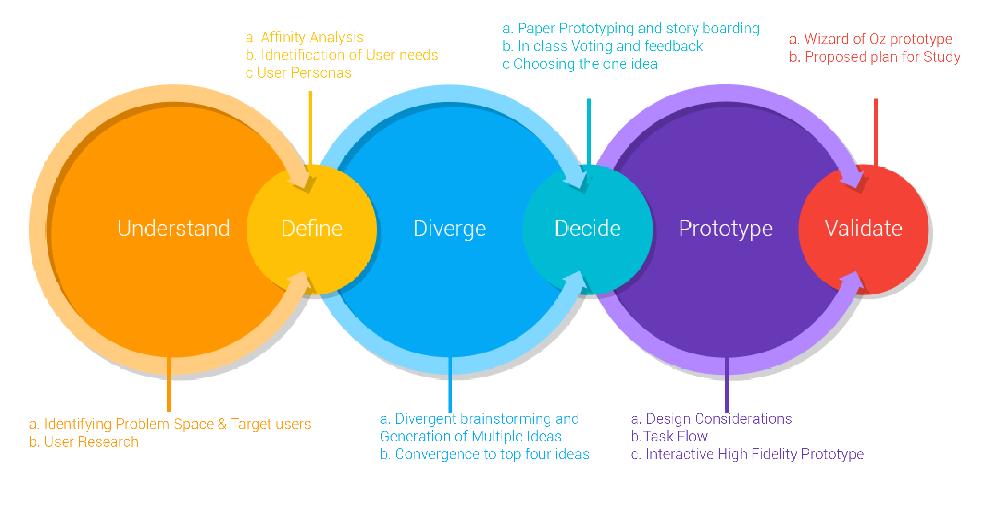Understand
1 Identification of Problem space and Target users (Preliminary Semi-Structured User Interview, Background Research, Expert/Stakeholder Interviews)
Our journey started with exploring the broad space pertaining to the importance of environmental sustainability and eco-friendly decision making on Campus. We conducted semi structured interviews the 10 novices and 4 expert with environmental authority on Campus through which helped us decide to focus on the area of effective waste recycling on campus. We decided to focus on the problem of efficient waste sorting behavior especially for people interacting with multiple bins on campus. The major motivation behind the problem came from the waste auditing done on spring 2016 by facility management of Georgia tech campus that discussed about the issue of incorrect waste sorting on Campus (Add Link). “Our target users were people on Campus who are concerned towards segregating waste correctly but doesn’t have the required knowledge to do it correctly."
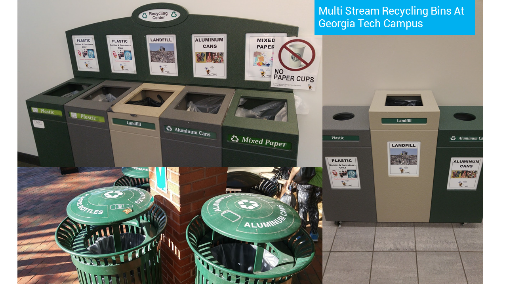2.User Research
As we converged on our problem space and target users, the next step for our journey was understand the strategies and challenges behind the waste segregation by students on campus.We conducted the following the primary research methods
Task based Controlled Observations
The controlled observations were designed to assess the user’s knowledge of proper waste segregation practices. We recruited 5 students to complete our waste sorting task. The task consisted of sorting a predetermined list of waste items designed to be representative of everyday waste that a student might have on campus. We implemented a think-aloud protocol and follow-up interview to learn about their underlying thought processes and gather additional feedback. This research method really emphasized the knowledge component of waste segregation
Natural Observations
The natural observations were designed to target the aspect of convenience as it factors into the user’s real-world behavior. For this method, we observed several waste bins around campus to see how students actually dispose of their trash. We observed 25 students across various locations around campus as they threw away their trash. For 10 of those 25, we asked a brief follow-up question about how they made their decision.
Expert Interview
We interviewed the Campus Recycling Coordinator to learn about proper waste segregation practices on campus. Expert interviews are an effective way of gathering high quality information in a relatively short amount of time. Overall, this method shows how we accounted for the expert’s perspective of the problem, compared to the two types of observations that focused on the novice’s side.
3. Defining the User Needs and Personas
Using affinity clustering ,We synthesized all our User Research results into “Strategies” of waste segregation related to bins, item and miscellaneous and the “Challenges” that our users faced that impeded them from making their decisions swiftly and correctly—each of which represent issues that our target users face in trying to conduct their task. We also identified three basic user needs that needs to fulfill and defined the two user personas.
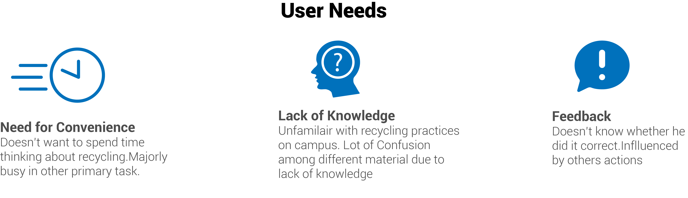 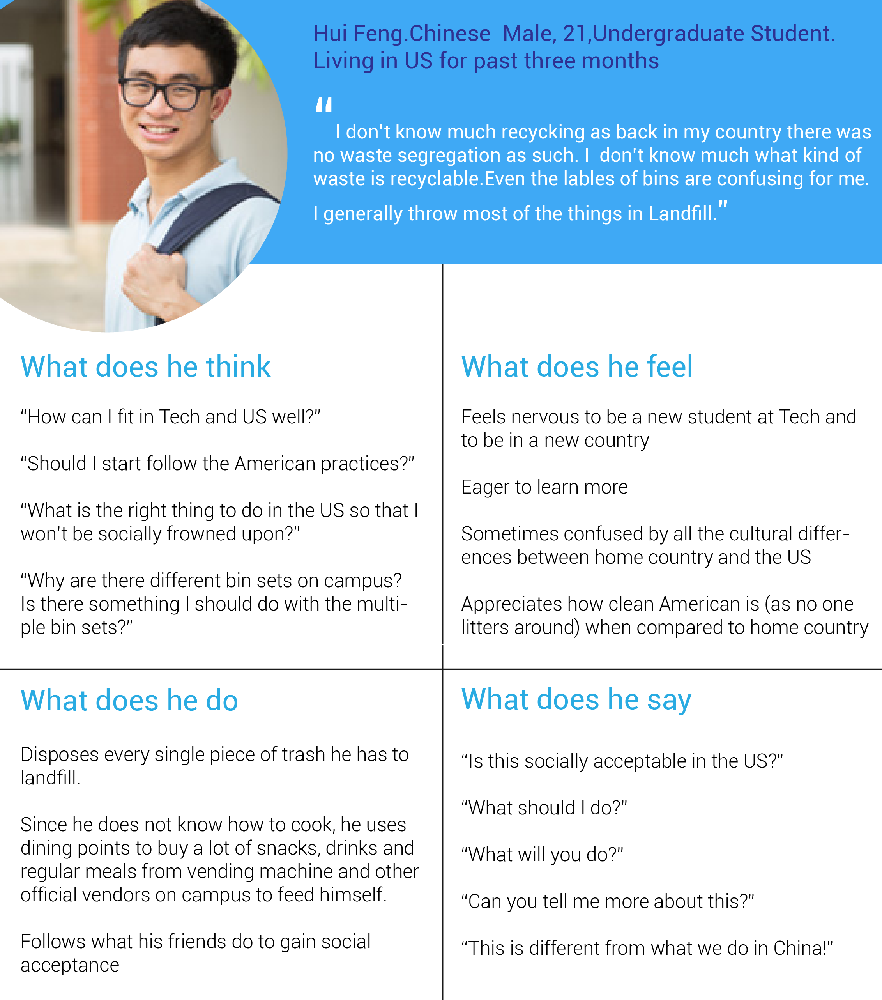 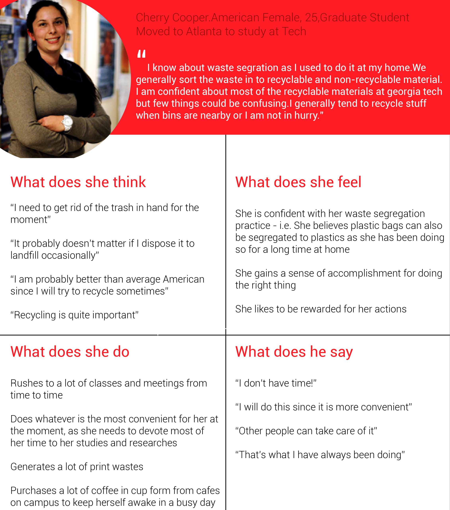Diverge
1. Ideation
Our research revealed that waste segregation practices are significantly influenced by two factors: knowledge and convenience, we want our new solution to facilitate those. Thus, the major motivation behind most of our solutions was helping users recognize and diagnose error on the go quickly before they put an item in a bin as well as simultaneously educate them about recycling behavior on campus
a.Brainstorming and 21 Multiple Ideas
We had design sprint brainstorming session in each of the group partner generated multiple idea in set of two cycles of 10 min each and then discussed with the group. The overlapping ideas were then merged and as a group we had 21 different ideas.
b. Converge to top Four Ideas
The ideas were then classified on the The X-axis which was a User-System scale where ideas closer to the ‘User’ end represented a solution that would involve more effort from the use, the system-end, was for ideas that requires less user involvement and more system processing to solve the problem. The Y-axis represented 5 different zones representing the 5 phases Pre-contemplation (Sub consciousness), Contemplation (Consciousness), Preparation (Pre-action), Action and Maintenance (Monitoring) of the Trans theoretical Model, which we saw was used as a reference when designing behavior change technologies. With this classification of ideas it was easier for us converge on our ideas in the following ways: we shortlisted ideas from each zone and easily combined similar aspects of them.
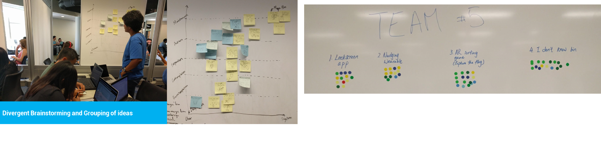Decide
In class voting and Feedback
Four design alternative Ideas were paper prototype and story boarded. They were presented during an in-class discussion session and voting was done by the members of the other class groups and feedback was shared.
A. Lock Screen Utility
Our lock-screen utility will dynamically generate a new item icon (e.g. plastic bottle) that needs to be slid towards any 1 of the 4 bins icons on screen to unlock the phone. The idea is to train the user about the right segregation criteria over a period of time even when they are not disposing actually the waste.
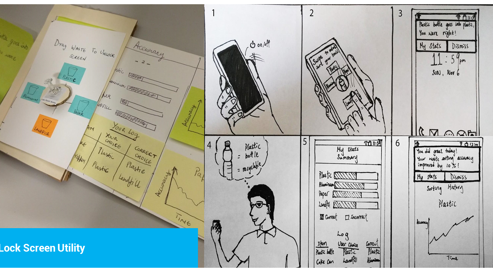B. Wearable Nudge
Our second idea is a just-in-time intervention system using a wearable that tries to gently nudge the user into taking a more informed decision about their choice.This idea was decided for our final prototype.
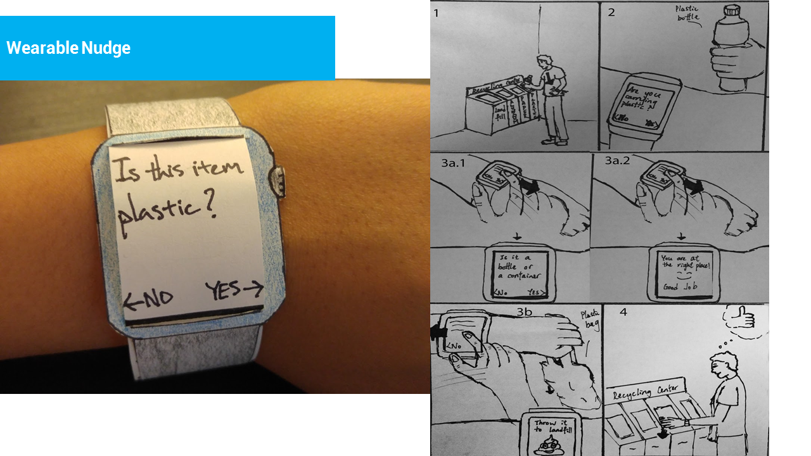C. AR Game capture the flag
The third idea is inspired by Augmented Reality games like Pokémon Go - players will have to toss virtual trash into the correct bin at physical locations. In order to increase engagement we decided to bring in a capture the flag like gameplay mechanic with students enrolling to play the game for a fixed campaign period (similar to Humans vs Zombies).
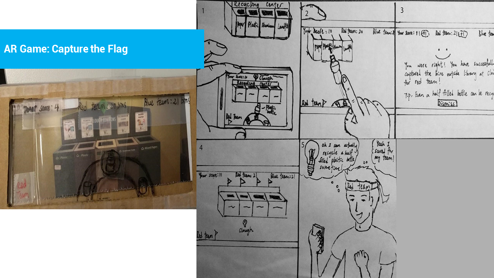D. I don't know bin
Our final idea aims to maximize convenience with the help of community assistance. The proposition is to develop an “I Don’t Know” Bin, which is placed above the regular set of bins that would act like a reverse vending machine. All an individual has to do is place their item on one of the slots and use a companion app to log it onto the system. On the other end of the system are experts who have another companion app that receives a notification for when an item is placed in the IDK bin of their turf. The expert can now remotely select the item and dispose it into the right bin. Information regarding where the item was disposed would be sent to the novice who placed the item in the slot.
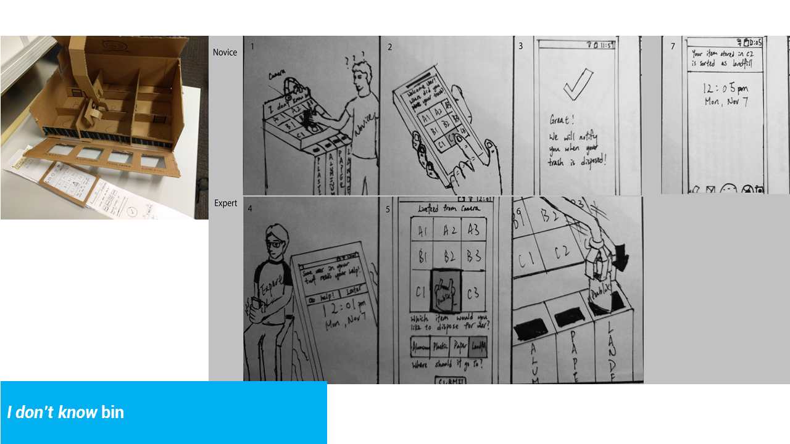Prototype
Finally, considering the voting feedback, time constraints and feasibility, overall impact and sustainability , our group decided to work on the nudge based wearable.
A .Design Considerations
The major objective for designing this prototype is to improve accuracy of waste sorting as quickly as possible for a real world scenario. Thus we had following design considerations to achieve these objectives:
1 Simple UI and interactions
Since our aim was to help the users complete task efficiently we wanted to simple UI minimum distraction
2 Concise content
Considering the extreme small screen space our major concern was to keep the queries short, succinct and clear.
3 Visibility of system status
The intermediate and terminal state of flow need to effectively communicated by using visual icons and color.
B. Task Flows
We took an expert feedback about the frequently asked questions and made the following task flow. 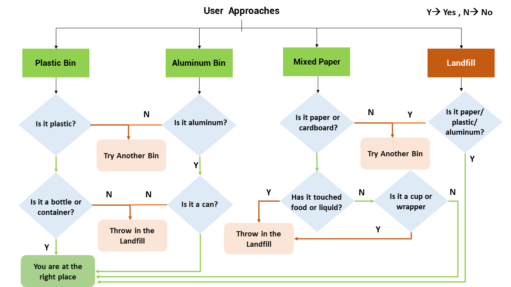
C. Interactive Prototype
The Following prototype shows the user task for approaching to the plastic bin 1. User receives a haptic nudge on their watch when they approach the plastic bin 2. The user is asked to check if the item is they are carrying is plastic - the user can swipe right for answering ‘yes’ and left for ‘no’ - user picks ‘yes’ 3. User is asked if the item is a plastic bag or a container a. If the user swipes right - they receive feedback that they’re going to dispose in the correct bin b. If the user swipes left - they are told to dispose the item in landfill instead 4. Based on the nudges, the user decides to dispose the item in the correct bins.